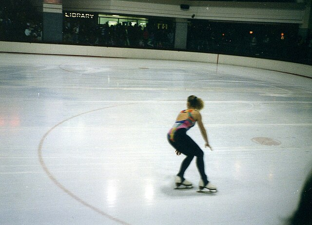
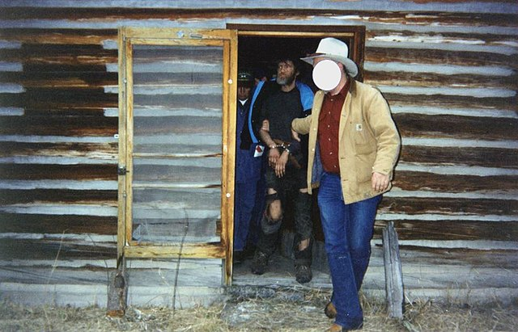

Significant Moments of the Decade
-
Kurt Cobain's suicide (1994)
Nirvana front man wrote some of the '90s' most memorable songs and propelled "grunge" to become the dominant musical genre of the decade. The singer battled depression and heroin addiction for years before his suicide. He was 27. -

OJ trial (1995)
“If it doesn't fit, you must acquit” — In one of the most memorable moments of a blockbuster murder trial, on June 15, 1995, O.J. Simpson struggled to fit his hand into a glove prosecutors claimed he wore the night his ex-wife Nicole Brown Simpson and Ronald Goldman were killed. The request to have Simpson try on gloves in court became a pivotal moment in a trial that ended in acquittal. -

Rodney King Riots (1992)
The acquittal of four LAPD officers involved in King’s beating led to days of unrest. -

Princess Diana dies (1997)
A tragic car crash in Paris shocked the world and led to global mourning of the beloved Princess of Wales. -

Tonya Harding (1994)
Before the 1994 Lillehammer Winter Olympics, figure skater Nancy Kerrigan was injured by a man connected to fellow US figure skater Tonya Harding, sparking one of sports’ biggest scandals. Kerrigan won silver; Harding placed eighth and was later banned for life. -

Lorena Bobbitt (1994)
The case that captivated tabloids and sparked conversations about domestic abuse. -

Tickle Me Elmo Craze (1996)
Going to the mall between Thanksgiving and Christmas was dangerous — never more so than during the Elmo craze. The toy retailed for ~$30 but re-sold for thousands, causing fights and even injuries in stores. -

Unabomber Caught (1996)
Ted Kaczynski was arrested after nearly 20 years of deadly bombings that killed three and injured 24. A tip from his brother led to the capture after a 35,000-word manifesto was published in major newspapers. -

May December (1996)
Mary Kay Letourneau, a married 34-year-old teacher, began an illegal relationship with a 13-year-old student, Vili Fualaau. She later gave birth to his child before serving seven years in prison. -

JonBenét Ramsey (1996)
How was a 6-year-old beauty pageant star slain in her own home? The case remains unsolved. Early suspicion fell on her parents, but DNA later cleared them. -

Columbine Shooting (1999)
A school shooting in Colorado killed 13 people and changed American views on school safety forever.